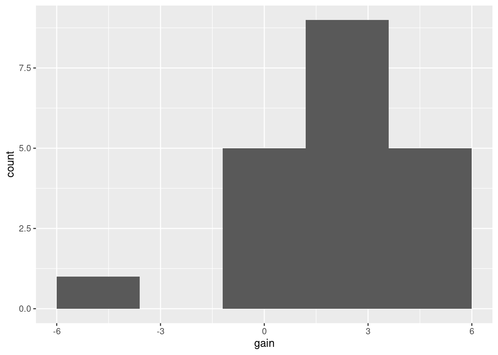

Chapter 13 Tidying data
13.1 Baseball and softball spaghetti
On a previous assignment, we found that students could throw a baseball further than they could throw a softball. In this question, we will make a graph called a “spaghetti plot” to illustrate this graphically. (The issue previously was that the data were matched pairs: the same students threw both balls.)
This seems to work most naturally by building a pipe, a line or two at a time. See if you can do it that way. (If you can’t make it work, use lots of temporary data frames, one to hold the result of each part.)
- Read in the data again from link. The variables had no names, so supply some, as you did before.
Solution
Literal copy and paste:
myurl <- "http://www.utsc.utoronto.ca/~butler/c32/throw.txt"
throws <- read_delim(myurl, " ", col_names = c("student", "baseball", "softball"))##
## ── Column specification ─────────────────────────────────────────────────────
## cols(
## student = col_double(),
## baseball = col_double(),
## softball = col_double()
## )- Create a new column that is the students turned into a
factor, adding it to your data frame. The reason for this will become clear later.
Solution
Feed student into factor, creating a new
column with mutate:
This doesn’t look any different from the original student numbers, but note the variable type at the top of the column.
- Collect together all the throwing distances into one column, making a second column that says which ball was thrown.
Solution
Use pivot_longer. It goes like this:
throws %>%
mutate(fs = factor(student)) %>%
pivot_longer(baseball:softball, names_to="ball", values_to="distance")The names_to is the name of a new categorical column whose values will be what is currently column names, and the values_to names a new quantitative (usually) column that will hold the values in those columns that you are making longer.
If you want to show off a little, you can use a select-helper, noting that the columns you want to make longer all end in “ball”:
throws %>%
mutate(fs = factor(student)) %>%
pivot_longer(ends_with("ball"), names_to="ball", values_to="distance")The same result. Use whichever you like.
- Using your new data frame, make a “scatterplot” of throwing distance against type of ball.
Solution
The obvious thing. No data frame in the ggplot because it’s the data frame that came out of the previous part of the pipeline (that doesn’t have a name):
throws %>%
mutate(fs = factor(student)) %>%
pivot_longer(baseball:softball, names_to="ball", values_to="distance") %>%
ggplot(aes(x = ball, y = distance)) + geom_point()
This is an odd type of scatterplot because the \(x\)-axis is actually a categorical variable. It’s really what would be called something like a dotplot. We’ll be using this as raw material for the plot we actually want.
What this plot is missing is an indication of which student threw which ball. As it stands now, it could be an inferior version of a boxplot of distances thrown for each ball (which would imply that they are two independent sets of students, something that is not true).
- Add two things to your plot: something that will distinguish the students by colour (this works best if the thing distinguished by colour is a factor), You can try it without. See below. and something that will join the two points for the same student by a line.
Solution
A colour and a group in the aes, and
a geom_line:
throws %>%
mutate(fs = factor(student)) %>%
pivot_longer(baseball:softball, names_to="ball", values_to="distance") %>%
ggplot(aes(x = ball, y = distance, group = fs, colour = fs)) +
geom_point() + geom_line()
You can see what happens if you use the student as a number:
throws %>%
mutate(fs = factor(student)) %>%
pivot_longer(baseball:softball, names_to="ball", values_to="distance") %>%
ggplot(aes(x = ball, y = distance, group = student, colour = student)) +
geom_point() + geom_line()
Now the student numbers are distinguished as a shade of blue (on an implied continuous scale: even a nonsensical fractional student number like 17.5 would be a shade of blue). This is not actually so bad here, because all we are trying to do is to distinguish the students sufficiently from each other so that we can see where the spaghetti strands go. But I like the multi-coloured one better.
- The legend is not very informative. Remove it from the plot,
using
guides.
Solution
You may not have seen this before. Here’s what to do: Find what’s
at the top of the legend that you want to remove. Here that is
fs. Find where fs appears in your
aes. It actually appears in two places: in
group and colour. I think the legend we want
to get rid of is actually the colour one, so we do this:
throws %>%
mutate(fs = factor(student)) %>%
pivot_longer(baseball:softball, names_to="ball", values_to="distance") %>%
ggplot(aes(x = ball, y = distance, group = fs, colour = fs)) +
geom_point() + geom_line() +
guides(colour = F)
That seems to have done it.
- What do you see on the final spaghetti plot? What does that tell you about the relative distances a student can throw a baseball vs. a softball? Explain briefly, blah blah blah.
Solution
Most of the spaghetti strands go downhill from baseball to softball, or at least very few of them go uphill. That tells us that most students can throw a baseball further than a softball. That was the same impression that the matched-pairs \(t\)-test gave us. But the spaghetti plot tells us something else. If you look carefully, you see that most of the big drops are for students who could throw a baseball a long way. These students also threw a softball further than the other students, but not by as much. Most of the spaghetti strands in the bottom half of the plot go more or less straight across. This indicates that students who cannot throw a baseball very far will throw a softball about the same distance as they threw the baseball. There is an argument you could make here that the difference between distances thrown is a proportional one, something like “a student typically throws a baseball 20% further than a softball”. That could be assessed by comparing not the distances themselves, but the logs of the distances: in other words, making a log transformation of all the distances. (Distances have a lower limit of zero, so you might expect observed distances to be skewed to the right, which is another argument for making some kind of transformation.)
13.2 Ethanol and sleep time in rats
A biologist wished to study the effects of ethanol on sleep
time in rats. A sample of 20 rats (all the same age) was selected, and
each rat was given an injection having a particular concentration (0,
1, 2 or 4 grams per kilogram of body weight) of ethanol. These are
labelled e0, e1, e2, e4. The “0”
treatment was a control group. The rapid eye movement (REM) sleep time
was then recorded for each rat. The data are in
link.
- Read the data in from the file. Check that you have four rows of observations and five columns of sleep times.
Solution
Separated by single spaces:
##
## ── Column specification ─────────────────────────────────────────────────────
## cols(
## treatment = col_character(),
## obs1 = col_double(),
## obs2 = col_double(),
## obs3 = col_double(),
## obs4 = col_double(),
## obs5 = col_double()
## )There are six columns, but one of them labels the groups, and there are correctly five columns of sleep times.
I used a “temporary” name for my data frame, because I’m going to be
doing some processing on it in a minute, and I want to reserve the
name sleep for my processed data frame.
- Unfortunately, the data are in the wrong format. All the sleep times for each treatment group are on one row, and we should have one column containing all the sleep times, and the corresponding row should show which treatment group that sleep time came from. Transform this data frame into one that you could use for modelling or making graphs.
Solution
We will want one column of sleep times, with an additional categorical column saying what observation each sleep time was within its group (or, you might say, we don’t really care about that much, but that’s what we are going to get).
The columns obs1 through obs5 are
different in that they are different observation numbers
(“replicates”, in the jargon). I’ll call that rep. What
makes them the same is that they are all sleep times. Columns
obs1 through obs5 are the ones we want to
combine, thus.
Here is where I use the name sleep: I save the result of
the pivot_longer into a data frame sleep. Note that I
also used the brackets-around-the-outside to display what I had,
so that I didn’t have to do a separate display. This is a handy
way of saving and displaying in one shot:
Typically in this kind of work, you have a lot of columns that need to be made longer, and a much smaller number of columns that need to be repeated as necessary. You can either specify all the columns to make longer, or you can specify “not” the other columns. Above, my first input to pivot_longer was “everything but treatment”, but you could also do it like this:
or like this:
This one was a little unusual in that usually with these you have the treatments in the columns and the replicates in the rows. It doesn’t matter, though: pivot_longer handles both cases.
We have 20 rows of 3 columns. I got all the rows, but you will probably get an output with ten rows as usual, and will need to click Next to see the last ten rows. The initial display will say how many rows (20) and columns (3) you have.
The column rep is not very interesting: it just says which
observation each one was within its group.
Sometimes the column playing the role of rep is interesting to us, but not here.
The interesting things are treatment and
sleeptime, which are the two variables we’ll need for our
analysis of variance.
- Using your new data frame, make side-by-side boxplots of sleep time by treatment group.
Solution

- In your boxplots, how does the median sleep time appear to depend on treatment group?
Solution
It appears to decrease as the dose of ethanol increases, and pretty substantially so (in that the differences ought to be significant, but that’s coming up).
- There is an assumption about spread that the analysis of variance needs in order to be reliable. Do your boxplots indicate that this assumption is satisfied for these data, bearing in mind that you have only five observations per group?
Solution
The assumption is that the population SDs of each group are all equal. Now, the boxplots show IQRs, which are kind of a surrogate for SD, and because we only have five observations per group to base the IQRs on, the sample IQRs might vary a bit. So we should look at the heights of the boxes on the boxplot, and see whether they are grossly unequal. They appear to be to be of very similar heights, all things considered, so I am happy.
If you want the SDs themselves:
Those are very similar, given only 5 observations per group. No problems here.
- Run an analysis of variance to see whether sleep time differs significantly among treatment groups. What do you conclude?
Solution
I use aov here, because I might be following up with
Tukey in a minute:
## Df Sum Sq Mean Sq F value Pr(>F)
## treatment 3 5882 1961 21.09 8.32e-06 ***
## Residuals 16 1487 93
## ---
## Signif. codes: 0 '***' 0.001 '**' 0.01 '*' 0.05 '.' 0.1 ' ' 1This is a very small P-value, so my conclusion is that the mean sleep times are not all the same for the treatment groups. Further than that I am not entitled to say (yet).
The technique here is to save the output from aov in
something, look at that (via summary), and then that same
something gets fed into TukeyHSD later.
- Would it be a good idea to run Tukey’s method here? Explain briefly why or why not, and if you think it would be a good idea, run it.
Solution
Tukey’s method is useful when (i) we have run an analysis of variance and got a significant result and (ii) when we want to know which groups differ significantly from which. Both (i) and (ii) are true here. So:
## Tukey multiple comparisons of means
## 95% family-wise confidence level
##
## Fit: aov(formula = sleeptime ~ treatment, data = sleep)
##
## $treatment
## diff lwr upr p adj
## e1-e0 -17.74 -35.18636 -0.2936428 0.0455781
## e2-e0 -31.36 -48.80636 -13.9136428 0.0005142
## e4-e0 -46.52 -63.96636 -29.0736428 0.0000056
## e2-e1 -13.62 -31.06636 3.8263572 0.1563545
## e4-e1 -28.78 -46.22636 -11.3336428 0.0011925
## e4-e2 -15.16 -32.60636 2.2863572 0.1005398- What do you conclude from Tukey’s method? (This is liable to be a bit complicated.) Is there a treatment that is clearly best, in terms of the sleep time being largest?
Solution
All the differences are significant except treatment e2
vs. e1 and e4. All the differences involving
the control group e0 are significant, and if you look
back at the boxplots in (c), you’ll see that the control group e0
had the highest mean sleep time. So the control group is
best (from this point of view), or another way of saying it is
that any dose of ethanol is significantly reducing mean
sleep time.
The other comparisons are a bit confusing, because the 1-4
difference is significant, but neither of the differences
involving 2 are. That is, 1 is better than 4, but 2 is not
significantly worse than 1 nor better than 4. This seems like it
should be a logical impossibility, but the story is that we don’t
have enough data to decide where 2 fits relative to 1 or 4. If we
had 10 or 20 observations per group, we might be able to conclude
that 2 is in between 1 and 4 as the boxplots suggest.
Extra: I didn’t ask about normality here, but like the equal-spreads assumption I’d say there’s nothing controversial about it with these data. With normality good and equal spreads good, aov plus Tukey is the analysis of choice.
13.3 Growth of tomatoes
A biology graduate student exposed each of 32 tomato plants to one of four different colours of light (8 plants to each colour). The growth rate of each plant, in millimetres per week, was recorded. The data are in link.
- Read the data into R and confirm that you have 8 rows and 5 columns of data.
Solution
This kind of thing:
##
## ── Column specification ─────────────────────────────────────────────────────
## cols(
## plant = col_double(),
## blue = col_double(),
## red = col_double(),
## yellow = col_double(),
## green = col_double()
## )I do indeed have 8 rows and 5 columns.
With only 8 rows, listing the data like this is good.
- Re-arrange the data so that you have one column
containing all the growth rates, and another column saying which
colour light each plant was exposed to. (The aim here is to produce
something suitable for feeding into
aovlater.)
Solution
This is a job for pivot_longer:
I chose to specify “everything but plant number”, since there are several colour columns with different names.
Since the column plant was never mentioned, this gets
repeated as necessary, so now it denotes “plant within colour group”,
which in this case is not very useful. (Where you have
matched pairs, or repeated measures in general, you do want to
keep track of which individual is which. But this is not repeated
measures because plant number 1 in the blue group and plant number 1
in the red group are different plants.)
There were 8 rows originally and 4 different colours, so there should be, and are, \(8 \times 4=32\) rows in the made-longer data set.
- Save the data in the new format to a text file. This is
most easily done using
write_csv, which is the opposite ofread_csv. It requires two things: a data frame, and the name of a file to save in, which should have a.csvextension.
Solution
The code is easy enough:
If no error, it worked. That’s all you need.
To verify (for my satisfaction) that it was saved correctly:
## plant,colour,growthrate
## 1,blue,5.34
## 1,red,13.67
## 1,yellow,4.61
## 1,green,2.72
## 2,blue,7.45
## 2,red,13.04
## 2,yellow,6.63
## 2,green,1.08
## 3,blue,7.15
## 3,red,10.16
## 3,yellow,5.29
## 3,green,3.97
## 4,blue,5.53
## 4,red,13.12
## 4,yellow,5.29
## 4,green,2.66
## 5,blue,6.34
## 5,red,11.06
## 5,yellow,4.76
## 5,green,3.69
## 6,blue,7.16
## 6,red,11.43
## 6,yellow,5.57
## 6,green,1.96
## 7,blue,7.77
## 7,red,13.98
## 7,yellow,6.57
## 7,green,3.38
## 8,blue,5.09
## 8,red,13.49
## 8,yellow,5.25
## 8,green,1.87On my system, that will list the contents of the file. Or you can just open it in R Studio (if you saved it the way I did, it’ll be in the same folder, and you can find it in the Files pane.)
- Make a suitable boxplot, and use it to assess the assumptions for ANOVA. What do you conclude? Explain briefly.
Solution
Nothing terribly surprising here. My data frame is called
toms2, for some reason:

There are no outliers, but there is a little skewness (compare the whiskers, not the placement of the median within the box, because what matters with skewness is the tails, not the middle of the distribution; it’s problems in the tails that make the mean unsuitable as a measure of centre). The Red group looks the most skewed. Also, the Yellow group has smaller spread than the others (we assume that the population variances within each group are equal). The thing to bear in mind here, though, is that there are only eight observations per group, so the distributions could appear to have unequal variances or some non-normality by chance.
My take is that these data, all things considered, are OK for ANOVA. Another option would be to do Welch’s ANOVA as well and compare with the regular ANOVA: if they give more or less the same P-value, that’s a sign that I didn’t need to worry.
Extra: some people like to run a formal test on the variances to test
them for equality. My favourite (for reasons explained elsewhere) is
the Levene test, if you insist on going this way. It lives in package
car, and does not take a data=, so you need
to do the with thing:
## Warning in leveneTest.default(growthrate, colour): colour coerced to factor.## Levene's Test for Homogeneity of Variance (center = median)
## Df F value Pr(>F)
## group 3 0.9075 0.4499
## 28The warning is because colour was actually text, but the test
did the right thing by turning it into a factor, so that’s OK.
There is no way we can reject equal variances in the four groups. The \(F\)-statistic is less than 1, in fact, which says that if the four groups have the same population variances, the sample variances will be more different than the ones we observed on average, and so there is no way that these sample variances indicate different population variances. (This is because of 8 observations only per group; if there had been 80 observations per group, it would have been a different story.) Decide for yourself whether you’re surprised by this.
With that in mind, I think the regular ANOVA will be perfectly good, and we would expect that and the Welch ANOVA to give very similar results.
I don’t need car again, so let’s get rid of it:
## Warning: 'car' namespace cannot be unloaded:
## namespace 'car' is imported by 'rstatix' so cannot be unloaded- Run (regular) ANOVA on these data. What do you conclude? (Optional extra: if you think that some other variant of ANOVA would be better, run that as well and compare the results.)
Solution
aov, bearing in mind that Tukey is likely to follow:
## Df Sum Sq Mean Sq F value Pr(>F)
## colour 3 410.5 136.82 118.2 5.28e-16 ***
## Residuals 28 32.4 1.16
## ---
## Signif. codes: 0 '***' 0.001 '**' 0.01 '*' 0.05 '.' 0.1 ' ' 1This is a tiny P-value, so the mean growth rate for the different colours is definitely not the same for all colours. Or, if you like, one or more of the colours has a different mean growth rate than the others.
This, remember, is as far as we go right now.
Extra: if you thought that normality was OK but not equal spreads, then Welch ANOVA is the way to go:
##
## One-way analysis of means (not assuming equal variances)
##
## data: growthrate and colour
## F = 81.079, num df = 3.000, denom df = 15.227, p-value = 1.377e-09The P-value is not quite as small as for the regular ANOVA, but it is still very small, and the conclusion is the same.
If you had doubts about the normality (that were sufficiently great, even given the small sample sizes), then go with Mood’s median test for multiple groups:
## $table
## above
## group above below
## blue 5 3
## green 0 8
## red 8 0
## yellow 3 5
##
## $test
## what value
## 1 statistic 1.700000e+01
## 2 df 3.000000e+00
## 3 P-value 7.067424e-04The P-value is again extremely small (though not quite as small as for the other two tests, for the usual reason that Mood’s median test doesn’t use the data very efficiently: it doesn’t use how far above or below the overall median the data values are.)
The story here, as ever, is consistency: whatever you thought was wrong, looking at the boxplots, needs to guide the test you do:
if you are not happy with normality, go with
median_testfromsmmr(Mood’s median test).if you are happy with normality and equal variances, go with
aov.if you are happy with normality but not equal variances, go with
oneway.test(Welch ANOVA).
So the first thing to think about is normality, and if you are OK with normality, then think about equal spreads. Bear in mind that you need to be willing to tolerate a certain amount of non-normality and inequality in the spreads, given that your data are only samples from their populations. (Don’t expect perfection, in short.)
- If warranted, run a suitable follow-up. (If not warranted, explain briefly why not.)
Solution
Whichever flavour of ANOVA you ran (regular ANOVA, Welch ANOVA, Mood’s median test), you got the same conclusion for these data: that the average growth rates were not all the same for the four colours. That, as you’ll remember, is as far as you go. To find out which colours differ from which in terms of growth rate, you need to run some kind of multiple-comparisons follow-up, the right one for the analysis you did. Looking at the boxplots suggests that red is clearly best and green clearly worst, and it is possible that all the colours are significantly different from each other.) If you did regular ANOVA, Tukey is what you need:
## Tukey multiple comparisons of means
## 95% family-wise confidence level
##
## Fit: aov(formula = growthrate ~ colour, data = toms2)
##
## $colour
## diff lwr upr p adj
## green-blue -3.8125 -5.281129 -2.3438706 0.0000006
## red-blue 6.0150 4.546371 7.4836294 0.0000000
## yellow-blue -0.9825 -2.451129 0.4861294 0.2825002
## red-green 9.8275 8.358871 11.2961294 0.0000000
## yellow-green 2.8300 1.361371 4.2986294 0.0000766
## yellow-red -6.9975 -8.466129 -5.5288706 0.0000000All of the differences are (strongly) significant, except for yellow and blue, the two with middling growth rates on the boxplot. Thus we would have no hesitation in saying that growth rate is biggest in red light and smallest in green light.
If you did Welch ANOVA, you need Games-Howell, which you have to get from one of the packages that offers it:
##
## Pairwise comparisons using Games-Howell test## data: growthrate by factor(colour)## blue green red
## green 1.6e-05 - -
## red 1.5e-06 4.8e-09 -
## yellow 0.18707 0.00011 5.8e-07##
## P value adjustment method: none## alternative hypothesis: two.sidedThe conclusions are the same as for the Tukey: all the means are significantly different except for yellow and blue. Finally, if you did Mood’s median test, you need this one:
Same conclusions again. This is what I would have guessed; the conclusions from Tukey were so clear-cut that it really didn’t matter which way you went; you’d come to the same conclusion.
That said, what I am looking for from you is a sensible choice of analysis of variance (ANOVA, Welch’s ANOVA or Mood’s median test) for a good reason, followed by the right follow-up for the test you did. Even though the conclusions are all the same no matter what you do here, I want you to get used to following the right method, so that you will be able to do the right thing when it does matter.
13.4 Pain relief in migraine headaches (again)
The data in link are from a study of pain relief in migraine headaches. Specifically, 27 subjects were randomly assigned to receive one of three pain relieving drugs, labelled A, B and C. Each subject reported the number of hours of pain relief they obtained (that is, the number of hours between taking the drug and the migraine symptoms returning). A higher value is therefore better. Can we make some recommendation about which drug is best for the population of migraine sufferers?
- Read in and display the data. Take a look at the data
file first, and see if you can say why
read_tablewill work andread_delimwill not.
Solution
The key is two things: the data values are lined up in columns, and
there is more than one space between values.
The second thing is why read_delim will not
work. If you look carefully at the data file, you’ll see that
the column names are above and aligned with the columns, which
is what read_table wants. If the column names had
not been aligned with the columns, we would have needed
read_table2.
##
## ── Column specification ─────────────────────────────────────────────────────
## cols(
## DrugA = col_double(),
## DrugB = col_double(),
## DrugC = col_double()
## )Success.
- What is it about the experimental design that makes a one-way analysis of variance plausible for data like this?
Solution
Each experimental subject only tested one drug, so that we have 27 independent observations, nine from each drug. This is exactly the setup that a one-way ANOVA requires. Compare that to, for example, a situation where you had only 9 subjects, but they each tested all the drugs (so that each subject produced three measurements). That is like a three-measurement version of matched pairs, a so-called repeated-measures design, which requires its own kind of analysis. To allow for the fact that measurements on the same subject are not independent but correlated.
- What is wrong with the current format of the data as far as doing a one-way ANOVA analysis is concerned? (This is related to the idea of whether or not the data are “tidy”.)
Solution
For our analysis, we need one column of pain relief time and one column labelling the drug that the subject in question took. Or, if you prefer to think about what would make these data “tidy”: there are 27 subjects, so there ought to be 27 rows, and all three columns are measurements of pain relief, so they ought to be in one column.
- “Tidy” the data to produce a data frame suitable for your analysis.
Solution
This is pivot_longer. The column names are going to be stored in a column drug, and the corresponding values in a column called painrelief (use whatever names you like):
Since I was making all the columns longer, I used the select-helper everything() to do that. Using instead DrugA:DrugC or starts_with("Drug") would also be good. Try them. starts_with is not case-sensitive, as far as I remember, so starts_with("drug") will also work here.
We do indeed have a new data frame with 27 rows, one per observation,
and 2 columns, one for each variable: the pain relief hours, plus a
column identifying which drug that pain relief time came from. Exactly
what aov needs.
You can probably devise a better name for your new data frame.
- Go ahead and run your one-way ANOVA (and Tukey if necessary). Assume for this that the pain relief hours in each group are sufficiently close to normally distributed with sufficiently equal spreads.
Solution
My last sentence absolves us from doing the boxplots that we would normally insist on doing.
## Df Sum Sq Mean Sq F value Pr(>F)
## drug 2 41.19 20.59 7.831 0.00241 **
## Residuals 24 63.11 2.63
## ---
## Signif. codes: 0 '***' 0.001 '**' 0.01 '*' 0.05 '.' 0.1 ' ' 1There are (strongly) significant differences among the drugs, so it is definitely worth firing up Tukey to figure out where the differences are:
## Tukey multiple comparisons of means
## 95% family-wise confidence level
##
## Fit: aov(formula = painrelief ~ drug, data = migraine2)
##
## $drug
## diff lwr upr p adj
## DrugB-DrugA 2.8888889 0.9798731 4.797905 0.0025509
## DrugC-DrugA 2.2222222 0.3132065 4.131238 0.0203671
## DrugC-DrugB -0.6666667 -2.5756824 1.242349 0.6626647Both the differences involving drug A are significant, and because a
high value of painrelief is better, in both cases drug A is
worse than the other drugs. Drugs B and C are not significantly
different from each other.
Extra: we can also use the “pipe” to do this all in one go:
migraine %>%
pivot_longer(everything(), names_to="drug", values_to="painrelief") %>%
aov(painrelief ~ drug, data = .) %>%
summary()## Df Sum Sq Mean Sq F value Pr(>F)
## drug 2 41.19 20.59 7.831 0.00241 **
## Residuals 24 63.11 2.63
## ---
## Signif. codes: 0 '***' 0.001 '**' 0.01 '*' 0.05 '.' 0.1 ' ' 1with the same results as before. Notice that I never actually created
a second data frame by name; it was created by pivot_longer and
then immediately used as input to aov.
And then thrown away.
I also used the
data=. trick to use “the data frame that came out of the previous step” as my input to aov.
Read the above like this: “take migraine, and then make everything longer, creating new columns drug and painrelief, and then do an ANOVA of painrelief by drug, and then summarize the results.”
What is even more alarming is that I can feed the output from
aov straight into TukeyHSD:
migraine %>%
pivot_longer(everything(), names_to="drug", values_to="painrelief") %>%
aov(painrelief ~ drug, data = .) %>%
TukeyHSD()## Tukey multiple comparisons of means
## 95% family-wise confidence level
##
## Fit: aov(formula = painrelief ~ drug, data = .)
##
## $drug
## diff lwr upr p adj
## DrugB-DrugA 2.8888889 0.9798731 4.797905 0.0025509
## DrugC-DrugA 2.2222222 0.3132065 4.131238 0.0203671
## DrugC-DrugB -0.6666667 -2.5756824 1.242349 0.6626647I wasn’t sure whether this would work, since the output from
aov is an R list rather than a data frame, but the
output from aov is sent into TukeyHSD whatever
kind of thing it is.
What I am missing here is to display the result of aov
and use it as input to TukeyHSD. Of course, I had to
discover that this could be solved, and indeed it can:
migraine %>%
pivot_longer(everything(), names_to="drug", values_to="painrelief") %>%
aov(painrelief ~ drug, data = .) %>%
{
print(summary(.))
.
} %>%
TukeyHSD()## Df Sum Sq Mean Sq F value Pr(>F)
## drug 2 41.19 20.59 7.831 0.00241 **
## Residuals 24 63.11 2.63
## ---
## Signif. codes: 0 '***' 0.001 '**' 0.01 '*' 0.05 '.' 0.1 ' ' 1## Tukey multiple comparisons of means
## 95% family-wise confidence level
##
## Fit: aov(formula = painrelief ~ drug, data = .)
##
## $drug
## diff lwr upr p adj
## DrugB-DrugA 2.8888889 0.9798731 4.797905 0.0025509
## DrugC-DrugA 2.2222222 0.3132065 4.131238 0.0203671
## DrugC-DrugB -0.6666667 -2.5756824 1.242349 0.6626647The odd-looking second-last line of that again uses the . trick
for “whatever came out of the previous step”. The thing inside the
curly brackets is two commands one after the other; the first is to
display the summary of that aov
It needs print around it to display it, as you need print to display something within a loop or a function.
and the second is to just pass whatever came out of the
previous line, the output from aov, on, unchanged, into
TukeyHSD.
In the Unix/Linux world this is called tee,
where you print something and pass it on to the next step. The
name tee comes from a (real physical) pipe that plumbers would use to
split water flow into two, which looks like a letter T.
- What recommendation would you make about the best drug or drugs? Explain briefly.
Solution
Drug A is significantly the worst, so we eliminate that. But there is no significant difference between drugs B and C, so we have no reproducible reason for preferring one rather than the other. Thus, we recommend “either B or C”. If you weren’t sure which way around the drugs actually came out, then you should work out the mean pain relief score by drug:
These confirm that A is worst, and there is nothing much to choose between B and C. You should not recommend drug B over drug C on this evidence, just because its (sample) mean is higher. The point about significant differences is that they are supposed to stand up to replication: in another experiment, or in real-life experiences with these drugs, the mean pain relief score for drug A is expected to be worst, but between drugs B and C, sometimes the mean of B will come out higher and sometimes C’s mean will be higher, because there is no significant difference between them. This talks about means rather than individual observations; in individual cases, sometimes even drug A will come out best. But we’re interested in population means, since we want to do the greatest good for the greatest number. Greatest good for the greatest number is from Jeremy Bentham, 1748–1832, British philosopher and advocate of utilitarianism. Another way is to draw a boxplot of pain-relief scores:

The medians of drugs B and C are actually exactly the same. Because the pain relief values are all whole numbers (and there are only 9 in each group), you get that thing where enough of them are equal that the median and third quartiles are equal, actually for two of the three groups.
Despite the weird distributions, I’m willing to call these groups sufficiently symmetric for the ANOVA to be OK, but I didn’t ask you to draw the boxplot, because I didn’t want to confuse the issue with this. The point of this question was to get the data tidy enough to do an analysis.
As I said, I didn’t want you to have to get into this, but if you are worried, you know what the remedy is — Mood’s median test. Don’t forget to use the right data frame:
## $table
## above
## group above below
## DrugA 0 8
## DrugB 5 2
## DrugC 6 0
##
## $test
## what value
## 1 statistic 1.527273e+01
## 2 df 2.000000e+00
## 3 P-value 4.825801e-04Because the pain relief scores are integers, there are probably a lot of them equal to the overall median. There were 27 observations altogether, but Mood’s median test will discard any that are equal to this value. There must have been 9 observations in each group to start with, but if you look at each row of the table, there are only 8 observations listed for drug A, 7 for drug B and 6 for drug C, so there must have been 1, 2 and 3 (totalling 6) observations equal to the median that were discarded.
The P-value is a little bigger than came out of the \(F\)-test, but the conclusion is still that there are definitely differences among the drugs in terms of pain relief. The table at the top of the output again suggests that drug A is worse than the others, but to confirm that you’d have to do Mood’s median test on all three pairs of drugs, and then use Bonferroni to allow for your having done three tests:
Drug A gives worse pain relief (fewer hours) than both drugs B and C, which are not significantly different from each hour. This is exactly what you would have guessed from the boxplot.
I adjusted the P-values as per Bonferroni by multiplying them by 3 (so that I could still compare with 0.05), but it makes no sense to have a P-value, which is a probability, greater than 1, so an “adjusted P-value” that comes out greater than 1 is rounded back down to 1. You interpret this as being “no evidence at all of a difference in medians” between drugs B and C.
13.5 Location, species and disease in plants
The table below is a “contingency table”, showing frequencies of diseased and undiseased plants of two different species in two different locations:
Species Disease present Disease absent
Location X Location Y Location X Location Y
A 44 12 38 10
B 28 22 20 18
The data were saved as
link. In that
file, the columns are coded by two letters: a p or an
a to denote presence or absence of disease, and an x
or a y to denote location X or Y. The data are separated by
multiple spaces and aligned with the variable names.
- Read in and display the data.
Solution
read_table again. You know this because, when you looked
at the data file, which of course you did (didn’t you?), you saw
that the data values were aligned by columns with multiple spaces
between them:
##
## ── Column specification ─────────────────────────────────────────────────────
## cols(
## Species = col_character(),
## px = col_double(),
## py = col_double(),
## ax = col_double(),
## ay = col_double()
## )I was thinking ahead, since I’ll be wanting to have one of my columns
called disease, so I’m not calling the data frame
disease.
You’ll also have noticed that I simplified the data frame that I had you read in, because the original contingency table I showed you has two header rows, and we have to have one header row. So I mixed up the information in the two header rows into one.
- Explain briefly how these data are not “tidy”.
Solution
The simple answer is that there are 8 frequencies, that each ought to be in a row by themselves. Or, if you like, there are three variables, Species, Disease status and Location, and each of those should be in a column of its own. Either one of these ideas, or something like it, is good. I need you to demonstrate that you know something about “tidy data” in this context.
- Use a suitable
tidyrtool to get all the things that are the same into a single column. (You’ll need to make up a temporary name for the other new column that you create.) Show your result.
Solution
pivot_longer is the tool. All the columns apart from
Species contain frequencies.
They are frequencies in disease-location combinations, so
I’ll call the column of “names” disloc. Feel
free to call it temp for now if you prefer:
- Explain briefly how the data frame you just created is still not “tidy” yet.
Solution
The column I called disloc actually contains two
variables, disease and location, which need to be split up. A
check on this is that we
have two columns (not including the frequencies), but back in
(b) we found three variables, so there
ought to be three non-frequency columns.
- Use one more
tidyrtool to make these data tidy, and show your result.
Solution
This means splitting up disloc into two separate columns,
splitting after the first character, thus:
This is now tidy: eight frequencies in rows, and three non-frequency columns. (Go back and look at your answer to part (b) and note that the issues you found there have all been resolved now.)
Extra: my reading of one of the vignettes (the one called pivot) for tidyr suggests that pivot_longer can do both the making longer and the separating in one shot:
tbl %>% pivot_longer(-Species, names_to=c("disease", "location"), names_sep=1, values_to="frequency")And I (amazingly) got that right first time!
The idea is that you recognize that the column names are actually two things: a disease status and a location. To get pivot_longer to recognize that, you put two things in the names_to. Then you have to say how the two things in the columns are separated: this might be by an underscore or a dot, or, as here, “after the first character” (just as in separate). Using two names and some indication of what separates them then does a combined pivot-longer-and-separate, all in one shot.
The more I use pivot_longer, the more I marvel at the excellence of its design: it seems to be easy to guess how to make things work.
- Let’s see if we can re-construct the original contingency
table (or something equivalent to it). Use the function
xtabs. This requires first a model formula with the frequency variable on the left of the squiggle, and the other variables separated by plus signs on the right. Second it requires a data frame, withdata=. Feed your data frame from the previous part intoxtabs. Save the result in a variable and display the result.
Solution
## , , location = x
##
## disease
## Species a p
## A 38 44
## B 20 28
##
## , , location = y
##
## disease
## Species a p
## A 10 12
## B 18 22This shows a pair of contingency tables, one each for each of the two locations (in general, the variable you put last on the right side of the model formula). You can check that everything corresponds with the original data layout at the beginning of the question, possibly with some things rearranged (but with the same frequencies in the same places).
- Take the output from the last part and feed it into the
function
ftable. How has the output been changed? Which do you like better? Explain briefly.
Solution
This:
## location x y
## Species disease
## A a 38 10
## p 44 12
## B a 20 18
## p 28 22This is the same output, but shown more compactly. (Rather like a
vertical version of the original data, in fact.) I like
ftable better because it displays the data in the smallest
amount of space, though I’m fine if you prefer the xtabs
output because it spreads things out more. This is a matter of
taste. Pick one and tell me why you prefer it, and I’m good.
That’s the end of what you had to do, but I thought I would do some modelling and try to find out what’s associated with disease. The appropriate modelling with frequencies is called “log-linear modelling”, and it assumes that the log of the frequencies has a linear relationship with the effects of the other variables. This is not quite as simple as the log transformations we had before, because bigger frequencies are going to be more variable, so we fit a generalized linear model with a Poisson-distributed response and log link. (It’s better if you know what that means, but you ought to be able to follow the logic if you don’t. Chapter 29 has more on this.)
First, fit a model predicting frequency from everything, including all the interactions. (The reason for doing it this way will become clear later):
model.1 <- glm(frequency ~ Species * location * disease, data = tbl.3, family = "poisson")
drop1(model.1, test = "Chisq")## Single term deletions
##
## Model:
## frequency ~ Species * location * disease
## Df Deviance AIC LRT Pr(>Chi)
## <none> 0.000000 55.291
## Species:location:disease 1 0.070257 53.362 0.070257 0.791The residuals are all zero because this model fits perfectly. The
problem is that it is very complicated, so it offers no insight. So
what we do is to look at the highest-order interaction
Species:location:disease and see whether it is
significant. It is not, so we can remove it. This is reminiscent of
variable selection in regression, where we pull the least significant
thing out of the model in turn until we can go no further. But here,
we have additional things to think about: we have to get rid of all
the three-way interactions before we can tackle the two-way ones, and
all the two-way ones before we can tackle the main effects. There is a
so-called “nested” structure happening here that says you don’t look
at, say, Species, until you have removed all the
higher-order interactions involving Species. Not clear yet?
Don’t fret. drop1 allows you to assess what is currently up
for grabs (here, only the three-way interaction, which is not
significant, so out it comes).
Let’s get rid of that three-way interaction. This is another use for
update that you might have seen in connection with multiple regression
(to make small changes to a big model):
## Single term deletions
##
## Model:
## frequency ~ Species + location + disease + Species:location +
## Species:disease + location:disease
## Df Deviance AIC LRT Pr(>Chi)
## <none> 0.0703 53.362
## Species:location 1 13.0627 64.354 12.9924 0.0003128 ***
## Species:disease 1 0.2696 51.561 0.1993 0.6552865
## location:disease 1 0.1043 51.396 0.0340 0.8536877
## ---
## Signif. codes: 0 '***' 0.001 '**' 0.01 '*' 0.05 '.' 0.1 ' ' 1Notice how update saved us having to write the whole model
out again.
Now the three two-way interactions are up for grabs:
Species:location, Species:disease and
location:disease. The last of these is the least significant,
so out it comes. I did some copying and pasting, but I had to remember
which model I was working with and what I was removing:
## Single term deletions
##
## Model:
## frequency ~ Species + location + disease + Species:location +
## Species:disease
## Df Deviance AIC LRT Pr(>Chi)
## <none> 0.1043 51.396
## Species:location 1 13.0678 62.359 12.9635 0.0003176 ***
## Species:disease 1 0.2746 49.566 0.1703 0.6798021
## ---
## Signif. codes: 0 '***' 0.001 '**' 0.01 '*' 0.05 '.' 0.1 ' ' 1Species:disease comes out, but it looks as if
Species:location will have to stay:
## Single term deletions
##
## Model:
## frequency ~ Species + location + disease + Species:location
## Df Deviance AIC LRT Pr(>Chi)
## <none> 0.2746 49.566
## disease 1 2.3617 49.653 2.0871 0.1485461
## Species:location 1 13.2381 60.530 12.9635 0.0003176 ***
## ---
## Signif. codes: 0 '***' 0.001 '**' 0.01 '*' 0.05 '.' 0.1 ' ' 1Species:location indeed stays. That means that anything
“contained in” it also has to stay, regardless of its main
effect. So the only candidate for removal now is disease: not
significant, out it comes:
## Single term deletions
##
## Model:
## frequency ~ Species + location + Species:location
## Df Deviance AIC LRT Pr(>Chi)
## <none> 2.3617 49.653
## Species:location 1 15.3252 60.617 12.963 0.0003176 ***
## ---
## Signif. codes: 0 '***' 0.001 '**' 0.01 '*' 0.05 '.' 0.1 ' ' 1And now we have to stop.
What does this final model mean? Well, frequency depends significantly
on the Species:location combination, but not on anything
else. To see how, we make a contingency table of species by location
(totalling up over disease status, since that is not significant):
## location
## Species x y
## A 82 22
## B 48 40Most of the species A’s are at location X, but the species B’s are about evenly divided between the two locations. Or, if you prefer (equally good): location X has mostly species A, while location Y has mostly species B. You can condition on either variable and compare the conditional distribution of the other one.
Now, this is rather interesting, because this began as a study of disease, but disease has completely disappeared from our final model! That means that nothing in our final model has any relationship with disease. Indeed, if you check the original table, you’ll find that disease is present slightly more than it’s absent, for all combinations of species and location. That is, neither species nor location has any particular association with (effect on) disease, since disease prevalence doesn’t change appreciably if you change location, species or the combination of them.
The way an association with disease would show up is if a
disease:something interaction had been significant and had
stayed in the model, that something would have been associated with
disease. For example, if the disease:Species table had looked
like this:
disease <- c("a", "a", "p", "p")
Species <- c("A", "B", "A", "B")
frequency <- c(10, 50, 30, 30)
xx <- tibble(disease, Species, frequency)
xtabs(frequency ~ disease + Species, data=xx)## Species
## disease A B
## a 10 50
## p 30 30For species A, disease is present 75% of the time, but for species B it’s present less than 40% of the time. So in this one there ought to be a significant association between disease and species:
xx.1 <- glm(frequency ~ disease * Species, data = xx, family = "poisson")
drop1(xx.1, test = "Chisq")## Single term deletions
##
## Model:
## frequency ~ disease * Species
## Df Deviance AIC LRT Pr(>Chi)
## <none> 0.000 28.400
## disease:Species 1 15.518 41.918 15.518 8.171e-05 ***
## ---
## Signif. codes: 0 '***' 0.001 '**' 0.01 '*' 0.05 '.' 0.1 ' ' 1And so there is. Nothing can come out of the model. (This is the same
kind of test as a chi-squared test for association.
The log-linear model is a multi-variable generalization of that.)
13.6 Mating songs in crickets
Male tree crickets produce “mating songs” by rubbing their wings together to produce a chirping sound. It is hypothesized that female tree crickets identify males of the correct species by how fast (in chirps per second) the male’s mating song is. This is called the “pulse rate”. Some data for two species of crickets are in link. The columns, which are unlabelled, are temperature and pulse rate (respectively) for Oecanthus exclamationis (first two columns) and Oecanthus niveus (third and fourth columns). The columns are separated by tabs. There are some missing values in the first two columns because fewer exclamationis crickets than niveus crickets were measured. The research question is whether males of the different species have different average pulse rates. It is also of interest to see whether temperature has an effect, and if so, what. Before we get to that, however, we have some data organization to do.
- Read in the data, allowing for the fact that you have no
column names. You’ll see that the
columns have names
X1throughX4. This is OK.
Solution
Tab-separated, so read_tsv; no column names, so col_names=F:
my_url <- "http://www.utsc.utoronto.ca/~butler/c32/crickets.txt"
crickets <- read_tsv(my_url, col_names = F)##
## ── Column specification ─────────────────────────────────────────────────────
## cols(
## X1 = col_double(),
## X2 = col_double(),
## X3 = col_double(),
## X4 = col_double()
## )As promised.
If you didn’t catch the tab-separated part, this probably happened to you:
##
## ── Column specification ─────────────────────────────────────────────────────
## cols(
## X1 = col_character()
## )## Warning: 3 parsing failures.
## row col expected actual file
## 15 -- 1 columns 2 columns 'http://www.utsc.utoronto.ca/~butler/c32/crickets.txt'
## 16 -- 1 columns 2 columns 'http://www.utsc.utoronto.ca/~butler/c32/crickets.txt'
## 17 -- 1 columns 2 columns 'http://www.utsc.utoronto.ca/~butler/c32/crickets.txt'This doesn’t look good:
The “expected columns” being 1 should bother you, since we know there are supposed to be 4 columns. At this point, we take a look at what got read in:
and there you see the t or “tab” characters separating the
values, instead of spaces. (This is what I tried first, and once I
looked at this, I realized that read_tsv was what I needed.)
- Tidy these untidy data, going as directly as you can to something tidy. (Some later parts show you how it used to be done.) Begin by: (i) adding a column of row numbers, (ii)
rename-ing the columns to species name, an underscore, and the variable contents (keepingpulserateas one word), and then usepivot_longer. Note that the column names encode two things.
Solution
Take this one piece of the pipeline at a time: that is, first check that you got the renaming right and looking at what you have, before proceeding to the pivot_longer. The syntax of rename is new name equals old name, and I like to split this over several lines to make it easier to read:
crickets %>%
mutate(row=row_number()) %>%
rename(
exclamationis_temperature = X1,
exclamationis_pulserate = X2,
niveus_temperature = X3,
niveus_pulserate = X4
) The first part of each column name is the species and the second part is what was measured each time, separated by an underscore. To handle that in pivot_longer, you give two names of new columns to create (in names_to), and say what they’re separated by:
crickets %>%
mutate(row=row_number()) %>%
rename(
exclamationis_temperature = X1,
exclamationis_pulserate = X2,
niveus_temperature = X3,
niveus_pulserate = X4
) %>%
pivot_longer(-row, names_to=c("species", "measurement"), names_sep="_", values_to = "obs")This is tidy now, but we went a step too far: that column measurement should be two columns, called temperature and pulserate, which means it should be made wider:
crickets %>%
mutate(row=row_number()) %>%
rename(
exclamationis_temperature = X1,
exclamationis_pulserate = X2,
niveus_temperature = X3,
niveus_pulserate = X4
) %>%
pivot_longer(-row, names_to=c("species", "measurement"), names_sep="_", values_to = "obs") %>%
pivot_wider(names_from=measurement, values_from=obs)The row numbers are cricket-within-species, which isn’t very meaningful, but we needed something for the pivot_wider to key on, to recognize what needed to go in which row. The way it works is it uses anything not mentioned in names_from or values_from as a “key”: each unique combination belongs in a row. Here that would be the combination of row and species, which is a good key because each species appears once with each row number.
- If you found (b) a bit much to take in, the rest of the way we take a rather more leisurely approach towards the tidying.
These data are rather far from being tidy. There need to be
three variables, temperature, pulse rate and species, and there
are \(14+17=31\) observations altogether. This one is tricky in that
there are temperature and pulse rate for each of two levels of a
factor, so I’ll suggest combining the temperature and chirp rate
together into one thing for each species, then pivoting them longer (“combining”),
then pivoting them wider again (“splitting”). Create new columns, named for each species,
that contain the temperature and pulse rate for that species in
that order, united together.
For the rest of this question, start from the data frame you read
in, and build a pipe, one or two steps at a time, to save creating
a lot of temporary data frames.
Solution
Breathe, and then begin. unite creates new columns by
joining together old ones:
As str-c or paste do, actually, but the advantage of unite is that it gets rid of the other columns, which you probably no longer need.
Note that the original columns X1:X4 are gone, which
is fine, because the information we needed from them is contained in
the two new columns. unite by default uses an underscore to
separate the joined-together values, which is generally safe since you
won’t often find those in data.
Digression: unite-ing with a space could cause problems if
the data values have spaces in them already. Consider this list of names:
Two very former students of mine, a Norwegian soccer player, and a Bangladeshi cricketer. Only one of these has played for Manchester United:
and let’s make a data frame:
Now, what happens if we unite those columns, separating them
by a space?
If we then try to separate them again, what happens?
## Warning: Expected 2 pieces. Additional pieces discarded in 3 rows [1, 2, 3].Things have gotten lost: most of the original values of manu
and some of the names. If we use a different separator character,
either choosing one deliberately or going with the default underscore,
everything works swimmingly:
and we are back to where we started.
If you run just the unite line (move the pipe symbol to the
next line so that the unite line is complete as it stands),
you’ll see what happened.
- The two columns
exclamationisandniveusthat you just created are both temperature-pulse rate combos, but for different species. Collect them together into one column, labelled by species. (This is a straighttidyrpivot_longer, even though the columns contain something odd-looking.)
Solution
Thus, this, naming the new column temp_pulse since it
contains both of those things. Add to the end of the pipe you
started building in the previous part:
crickets %>%
unite(exclamationis, X1:X2) %>%
unite(niveus, X3:X4) %>%
pivot_longer(exclamationis:niveus, names_to = "species", values_to = "temp_pulse")Yep. You’ll see both species of
crickets, and you’ll see some missing values at the bottom, labelled,
at the moment, NA_NA.
This is going to get rather long, but don’t fret: we debugged the two
unite lines before, so if you get any errors, they must
have come from the pivot_longer. So that would be the place to check.
- Now split up the temperature-pulse combos at the underscore, into
two separate columns. This is
separate. When specifying what to separate by, you can use a number (“split after this many characters”) or a piece of text, in quotes (“when you see this text, split at it”).
Solution
The text to split by is an underscore (in quotes), since
unite by default puts an underscore in between the
values it pastes together. Glue the separate onto the
end. We are creating two new variables temperature and
pulse_rate:
crickets %>%
unite(exclamationis, X1:X2) %>%
unite(niveus, X3:X4) %>%
pivot_longer(exclamationis:niveus, names_to = "species", values_to = "temp_pulse") %>%
separate(temp_pulse, c("temperature", "pulse_rate"), "_")You’ll note that unite and separate are opposites (“inverses”) of each other, but we haven’t just done something and then undone it, because we have a pivot_longer in between; in fact, arranging it this way has done precisely the tidying we wanted.
- Almost there. Temperature and pulse rate are still text
(because
uniteturned them into text), but they should be numbers. Create new variables that are numerical versions of temperature and pulse rate (usingas.numeric). Check that you have no extraneous variables (and, if necessary, get rid of the ones you don’t want). (Species is also text and really ought to be a factor, but having it as text doesn’t seem to cause any problems.) You can, if you like, useparse_numberinstead ofas.numeric. They should both work. The distinction I prefer to make is thatparse_numberis good for text with a number in it (that we want to pull the number out of), whileas.numericis for turning something that looks like a number but isn’t one into a genuine number. You could just as well make the point that the text 20.8 contains the number 20.8 and nothing else, so that parsing it as text in search of a number will pull out 20.8 as a number. If that logic works for you, go with it.
Solution
mutate-ing into a column that already exists overwrites
the variable that’s already there (which saves us some effort
here).
crickets.1 <- crickets %>%
unite(exclamationis, X1:X2) %>%
unite(niveus, X3:X4) %>%
pivot_longer(exclamationis:niveus, names_to = "species", values_to = "temp_pulse") %>%
separate(temp_pulse, c("temperature", "pulse_rate"), "_") %>%
mutate(temperature = as.numeric(temperature)) %>%
mutate(pulse_rate = as.numeric(pulse_rate))## Warning in mask$eval_all_mutate(quo): NAs introduced by coercion
## Warning in mask$eval_all_mutate(quo): NAs introduced by coercionI saved the data frame this time, since this is the one we will use for our analysis.
The warning message tells us that we got genuine missing-value NAs back, which is probably what we want. Specifically, they got turned from missing text to missing numbers! You might think that missing is just missing, but R distinguishes between types of missing. The R word “coercion” means values being changed from one type of thing to another type of thing. (We’ll ignore the missings and see if they cause us any trouble. The same warning messages will show up on graphs later.) So I have 34 rows (including three rows of missings) instead of the 31 rows I would have liked. Otherwise, success.
There is (inevitably) another way to do this. We are doing the
as.numeric twice, exactly the same on two different columns,
and when you are doing the same thing on a number of columns, here a
mutate with the same function, you have the option of using
across. This is the same idea
that we used way
back to compute numerical summaries of a bunch of columns:
crickets %>%
unite(exclamationis, X1:X2) %>%
unite(niveus, X3:X4) %>%
pivot_longer(exclamationis:niveus, names_to = "species", values_to = "temp_pulse") %>%
separate(temp_pulse, c("temperature", "pulse_rate"), "_") %>%
mutate(across(c(temperature, pulse_rate), ~as.numeric(.)))## Warning in (structure(function (..., .x = ..1, .y = ..2, . = ..1) : NAs
## introduced by coercion## Warning in (structure(function (..., .x = ..1, .y = ..2, . = ..1) : NAs
## introduced by coercionCan’t I just say that these are columns 2 and 3?
crickets %>%
unite(exclamationis, X1:X2) %>%
unite(niveus, X3:X4) %>%
pivot_longer(exclamationis:niveus, names_to = "species", values_to = "temp_pulse") %>%
separate(temp_pulse, c("temperature", "pulse_rate"), "_") %>%
mutate(across(2:3, ~as.numeric(.)))## Warning in (structure(function (..., .x = ..1, .y = ..2, . = ..1) : NAs
## introduced by coercion## Warning in (structure(function (..., .x = ..1, .y = ..2, . = ..1) : NAs
## introduced by coercionYes. Equally good. What goes into the across
is the same as can go into a select: column numbers, names,
or any of those “select helpers” like starts_with.
You might think of using across here on the quantitative columns, but remember the reason for doing this: all the columns are text, before you convert temperature and pulse rate to numbers, and so there’s no way to pick out just the two columns you want that way.
Check that the temperature and pulse rate columns are now labelled
dbl, which means they actually are decimal numbers
(and don’t just look like decimal numbers).
Either way, using unite and then separate means that
all the columns we created we want to keep (or, all the ones we would
have wanted to get rid of have already been gotten rid of).
Now we could actually do some statistics. That we do elsewhere.
13.7 Number 1 songs
The data file link contains a lot of information about songs popular in 2000. This dataset is untidy. Our ultimate aim is to answer “which song occupied the #1 position for the largest number of weeks?”. To do that, we will build a pipe that starts from the data frame read in from the URL above, and finishes with an answer to the question. I will take you through this step by step. Each part will involve adding something to the pipe you built previously (possibly after removing a line or two that you used to display the previous result).
- Read the data and display what you have.
Solution
##
## ── Column specification ─────────────────────────────────────────────────────
## cols(
## .default = col_double(),
## artist.inverted = col_character(),
## track = col_character(),
## time = col_time(format = ""),
## genre = col_character(),
## date.entered = col_date(format = ""),
## date.peaked = col_date(format = ""),
## x66th.week = col_logical(),
## x67th.week = col_logical(),
## x68th.week = col_logical(),
## x69th.week = col_logical(),
## x70th.week = col_logical(),
## x71st.week = col_logical(),
## x72nd.week = col_logical(),
## x73rd.week = col_logical(),
## x74th.week = col_logical(),
## x75th.week = col_logical(),
## x76th.week = col_logical()
## )
## ℹ Use `spec()` for the full column specifications.There are a lot of columns. What does this look like?
On yours, you will definitely see a little arrow top right saying “there are more columns”, and you will have to click on it several times to see them all. A lot of the ones on the right will be missing.
- The columns
x1st.weekthroughx76th.weekcontain the rank of each song in the Billboard chart in that week, with week 1 being the first week that the song appeared in the chart. Convert all these columns into two: an indication of week, calledweek, and of rank, calledrank. Most songs appeared in the Billboard chart for a lot less than 76 weeks, so there are missing values, which you want to remove. (I say “indication of week” since this will probably be text at the moment). Display your new data frame. Do you have fewer columns? Why do you have a lot more rows? Explain briefly.
Solution
As is often the case, the first step is pivot_longer, to reduce all those columns to something easier to deal with. The columns we want to make longer are the ones ending in “week”:
billboard %>%
pivot_longer(ends_with("week"), names_to = "week", values_to="rank", values_drop_na = T)The “values” (ranks) have missings in them, which we wanted to get rid of.
There are now only 9 columns, a lot fewer than we started with. This
is (I didn’t need you to say) because we have collected together all
those week columns into one (a column called rank
with an indication of which week it came from). The logic of
the pivot_longer is that all those columns contain ranks (which is
what make them the same), but they are ranks from different weeks
(which is what makes them different).
What has actually happened is that we have turned “wide” format into
“long” format. This is not very insightful, so I would like you to
go a bit further in your explanation. The original data frame encodes
the rank of each song in each week, and what the pivot_longer has
done is to make that explicit: in the new data frame, each song’s rank
in each week appears in one row, so that there are as many rows
as there are song-week combinations. The original data frame had 317
songs over 76 weeks, so this many:
## [1] 24092song-week combinations.
Not every song appeared in the Billboard chart for 76 weeks, so our tidy data frame has a lot fewer rows than this.
You need to say that the original data frame had each song appearing once (on one line), but now each song appears on multiple rows, one for each week that the song was in the chart. Or something equivalent to that.
- Both your
weekandrankcolumns are (probably) text. Create new columns that contain just the numeric values, and display just your new columns, again adding onto the end of your pipe. If it so happens thatrankis already a number, leave it as it is.
Solution
My rank is already a number, so I could leave it; for later, I make a copy of it called rakn_numbe. The week has a number in it, which I can extract using parse_number:
billboard %>%
pivot_longer(ends_with("week"), names_to = "week", values_to="rank", values_drop_na = T) %>%
mutate(week_number=parse_number(week),
rank_number=rank)- The meaning of your week-number column is that it refers
to the number of weeks after the song first appeared in the
Billboard chart. That is, if a song’s first appearance (in
date.entered)is July 24, then week 1 is July 24, week 2 is July 31, week 3 is August 7, and so on. Create a columncurrentby adding the appropriate number of days, based on your week number, todate.entered. Displaydate.entered, your week number, andcurrentto show that you have calculated the right thing. Note that you can add a number of days onto a date and you will get another date.
Solution
There is a (small) gotcha here: if you read carefully, you’ll
see that “week 1” is actually “week 0” in terms of the
number of days to add on to date.entered. So you have
to subtract one from the number of weeks before you multiply
it by seven to get a number of days.
After that thinking, this:
billboard %>%
pivot_longer(ends_with("week"), names_to = "week", values_to="rank", values_drop_na = T) %>%
mutate(week_number=parse_number(week),
rank_number=rank) %>%
mutate(current = date.entered + (week_number - 1) * 7) %>%
select(date.entered, week_number, current)Don’t forget to use your week-turned-into-number, or else it
won’t work! (This bit me too, so you don’t need to feel bad.)
You can also combine the three column-definition statements into one
mutate. It doesn’t matter; as soon as you have defined a column, you
can use it in defining another column, even within the same
mutate.
Anyway, the rows displayed are all week_number 1, so the
current date should be the same as date.entered, and
is. (These are all the first week that a song is in the Billboard
chart).
You might be thinking that this is not much of a check, and you would
be right. A handy trick is to display a random sample of 10 (say) out
of the 5,000-odd rows of the data frame. To do that, add the line
sample_n(10) on the end, like this:
billboard %>%
pivot_longer(ends_with("week"), names_to = "week", values_to="rank", values_drop_na = T) %>%
mutate(
week_number = parse_number(week),
rank_number = rank
) %>%
mutate(current = date.entered + (week_number - 1) * 7) %>%
select(date.entered, week_number, current) %>%
sample_n(10)This gives a variety of rows to check. The first current
should be \(7-1=6\) weeks, or about a month and a half, after the date the song
entered the chart, and so it is; the second and third ones should be \(18-1=17\)
weeks after entry, which is very close to a third of a year (\(17 \times 3 = 51\)), or four months. November to March is indeed four months. The fourth one is the first week on the charts, so the current date and the date entered should be (and are) the same.
And so on.
Your random selection of rows is likely to be different from mine, but the same kind of thinking will enable you to check whether it makes sense.
- Reaching the #1 rank on the Billboard chart is one of
the highest accolades in the popular music world. List all the
songs that reached
rank1. For these songs, list the artist (as given in the data set), the song title, and the date(s) for which the song was ranked number 1. Arrange the songs in date order of being ranked #1. Display all the songs (I found 55 of them).
Solution
To the previous pipe, add the last lines below. You can use
either rank (text) or what I called
rank_number (a number). It doesn’t matter here,
since we are only checking for equal-to, not something like
“less than”:
billboard %>%
pivot_longer(ends_with("week"), names_to = "week", values_to="rank", values_drop_na = T) %>%
mutate(week_number=parse_number(week),
rank_number=rank) %>%
mutate(current = date.entered + (week_number - 1) * 7) %>%
filter(rank == 1) %>%
arrange(current) %>%
select(artist.inverted, track, current)You’ll see the first ten rows, as here, but with clickable buttons to
see the next 10 (and the previous 10 if you have moved beyond 1–10).
The “artist” column is called artist.inverted because, if
the artist is a single person rather than a group, their last name is
listed first. The song title appears in the column track.
The song by Destiny’s Child spills into 2001 because it entered the chart in 2000, and the data set keeps a record of all such songs until they drop out of the chart. I’m not sure what happened to the song that was #1 on January 8, 2000; maybe it entered the chart in 1999 Which was the title of a song by Prince. and so is not listed here.
- Use R to find out which song held the #1 rank for the largest number of weeks. For this, you can assume that the song titles are all unique (if it’s the same song title, it’s the same song), but the artists might not be (for example, Madonna might have had two different songs reach the #1 rank). The information you need is in the output you obtained for the previous part, so it’s a matter of adding some code to the end of that. The last mark was for displaying only the song that was ranked #1 for the largest number of weeks, or for otherwise making it easy to see which song it was.
Solution
This is a question of using count, but on the
track title:
billboard %>%
pivot_longer(ends_with("week"), names_to = "week", values_to="rank", values_drop_na = T) %>%
mutate(week_number=parse_number(week),
rank_number=rank) %>%
mutate(current = date.entered + (week_number - 1) * 7) %>%
filter(rank == 1) %>%
arrange(current) %>%
select(artist.inverted, track, current) %>%
count(track)Then you can scan down the n column, find that the
biggest number is 11, and say: it’s the song “Independent Women Part I” by Destiny’s Child. This is 3 points (out of 4, when the question
was to be handed in).
But, this is a data frame, so anything we can do to a data frame we
can do to this, like listing out only the row(s) where n is
equal to its maximum value:
billboard %>%
pivot_longer(ends_with("week"), names_to = "week", values_to="rank", values_drop_na = T) %>%
mutate(week_number=parse_number(week),
rank_number=rank) %>%
mutate(current = date.entered + (week_number - 1) * 7) %>%
filter(rank == 1) %>%
arrange(current) %>%
select(artist.inverted, track, current) %>%
count(track) %>%
filter(n == max(n))or arranging them in (most logically, descending) order by n
to make it easier to pick out the top one:
billboard %>%
pivot_longer(ends_with("week"), names_to = "week", values_to="rank", values_drop_na = T) %>%
mutate(week_number=parse_number(week),
rank_number=rank) %>%
mutate(current = date.entered + (week_number - 1) * 7) %>%
filter(rank == 1) %>%
arrange(current) %>%
select(artist.inverted, track, current) %>%
count(track) %>%
arrange(desc(n))Either of those would have netted you the 4th point.
If you want to be a little bit more careful, you can make an artist-track combination as below. This would catch occasions where the same song by two different artists made it to #1, or two different songs that happened to have the same title did. It’s not very likely that the same artist would record two different songs with the same title, though it is possible that the same song by the same artist could appear in the Billboard chart on two different occasions. As, for example, when Prince died.
I think I want to create an artist-song combo fairly early in my pipe,
and then display that later, something like this. This means
replacing track by my combo later in the pipe,
wherever it appears:
billboard %>%
pivot_longer(x1st.week:x76th.week, names_to = "week", values_to = "rank", values_drop_na = T) %>%
mutate(
week_number = parse_number(week),
rank_number = rank
) %>%
mutate(combo = paste(track, artist.inverted, sep = " by ")) %>%
mutate(current = date.entered + (week_number - 1) * 7) %>%
filter(rank == 1) %>%
arrange(current) %>%
select(combo, current) %>%
count(combo) %>%
arrange(desc(n))I don’t think it makes any difference here, but it might in other years, or if you look over several years where you might get cover versions of the same song performed by different artists.
Zero-point bonus: how many of these artists have you heard of? How many have your parents heard of? (I followed popular music quite closely much earlier than this, in the early 1980s in the UK. I remember both Madonna and U2 when they first became famous. U2’s first single was called “Fire” and it just scraped into the UK top 40. Things changed after that.)
13.8 Bikes on College
The City of Toronto collects all kinds of data on aspects of
life in the city. See
link. One
collection of data is records of the number of cyclists on certain
downtown streets. The data in
link are a record
of the cyclists on College Street on the block west from Huron to
Spadina on September 24, 2010. In the spreadsheet, each row relates to
one cyclist. The first column is the time the cyclist was observed (to
the nearest 15 minutes). After that, there are four pairs of
columns. The observer filled in (exactly) one X in each pair of
columns, according to whether (i) the cyclist was male or female, (ii)
was or was not wearing a helmet, (iii) was or was not carrying a
passenger on the bike, (iv) was or was not riding on the sidewalk. We
want to create a tidy data frame that has the time in each row, and
has columns containing appropriate values, often TRUE or
FALSE, for each of the four variables measured.
I will lead you through the process, which will involve developing a (long) pipe, one step at a time.
- Take a look at the spreadsheet (using Excel or similar: this may open when you click the link). Are there any obvious header rows? Is there any extra material before the data start? Explain briefly.
Solution
This is what I see (you should see something that looks like this):

There are really two rows of headers (the rows
highlighted in yellow). The actual information that says what
the column pair is about is in the first of those two rows, and
the second row indicates which category of the information above
this column refers to.
This is not the usual way that the column headers encode what
the columns are about: we are used to having one column
gender that would take the values female or
male, or a column helmet containing the values
yes or no. (You might be sensing
pivot_longer here, which may be one way of tackling this, but
I lead you into another idea below.)
There are also six lines above the highlighted ones that contain
background information about this study. (This is where I got
the information about the date of the study and which block of
which street it is about.)
I am looking for two things: the apparent header line is
actually two lines (the ones in yellow), and there are extra
lines above that which are not data.
- Read the data into an R data
frame. Read without headers, and instruct R how many lines
to skip over using
skip=and a suitable number. When this is working, display the first few lines of your data frame. Note that your columns have namesX1throughX9.
Solution
The actual data start on line 9, so we need to skip 8
lines. col_names=F is the way to say that we have no
column names (not ones that we want to use, anyway). Just
typing the name of the data frame will display “a few” (that
is, 10) lines of it, so that you can check it for
plausibleness:
my_url <- "http://www.utsc.utoronto.ca/~butler/c32/bikes.csv"
bikes <- read_csv(my_url, skip = 8, col_names = F)##
## ── Column specification ─────────────────────────────────────────────────────
## cols(
## X1 = col_time(format = ""),
## X2 = col_character(),
## X3 = col_character(),
## X4 = col_character(),
## X5 = col_character(),
## X6 = col_character(),
## X7 = col_character(),
## X8 = col_character(),
## X9 = col_character()
## )This seems to have worked: a column with times in it, and four pairs
of columns, with exactly one of each pair having an X in it. The
variable names X1 through X9 were generated by
read_csv, as it does when you read in data with
col_names=F. The times are correctly times, and the
other columns are all text. The blank cells in the spreadsheet have
appeared in our data frame as “missing” (NA). The notation
<NA> means “missing text” (as opposed to a missing number,
say).
The first line in our data frame contains the first 7:00 (am) cyclist, so it looks as if we skipped the right number of lines.
- What do you notice about the times in your first column? What do you think those “missing” times should be?
Solution
There are some times and some missing values. It seems a reasonable guess that the person recording the data only recorded a time when a new period of 15 minutes had begun, so that the missing times should be the same as the previous non-missing one: For example, the first five rows are cyclists observed at 7:00 am (or, at least, between 7:00 and 7:15). So they should be recorded as 7:00, and the ones in rows 7–10 should be recorded as 7:15, and so on.
- Find something from the
tidyversethat will fill Oh, what a giveaway. in those missing values with the right thing. Start a pipe from the data frame you read in, that updates the appropriate column with the filled-in times.
Solution
fill from tidyr fills
in the missing times with the previous non-missing
value. (This will mean finding the help for fill in R
Studio or online.)
I told you it was a giveaway.
If you look in the help for fill via ?fill
(or if you Google tidyr::fill, which is the full
name for “the fill that lives in tidyr”),
you’ll see that it requires up to two
things (not including the data frame): a column to fill, and
a direction to fill it (the default of “down” is exactly
what we want). Thus:
Success!
We will probably want to rename X1 to something like
time, so let’s do that now before we forget. There is a
rename that does about what you’d expect:
The only thing I keep forgetting is that the syntax of rename
is “new name equals old name”. Sometimes I think it’s the other way
around, and then I wonder why it doesn’t work.
I gave it a capital T so as not to confuse it with other things in R
called time.
- R’s
ifelsefunction works like=IFin Excel. You use it to create values for a new variable, for example in amutate. The first input to it is a logical condition (something that is either true or false); the second is the value your new variable should take if the condition is true, and the third is the value of your new variable if the condition is false. Create a new columngenderin your data frame that is “male” or “female” depending on the value of yourX2column, usingmutate. (You can assume that exactly one of the second and third columns has anXin it.) Add your code to the end of your pipe and display (the first 10 rows of) the result.
Solution
Under the assumption we are making, we only have to look
at column X2 and we ignore X3 totally:
Oh, that didn’t work. The gender column is either male or
missing; the two missing ones here should say female. What
happened? Let’s just look at our logical condition this time:
This is not true and false, it is true and missing. The idea is that
if X2 is missing, we don’t (in general) know what its value
is: it might even be X! So if X2 is missing, any
comparison of it with another value ought to be missing as well.
That’s in general. Here, we know where those missing values came from: they were blank cells in the spreadsheet, so we actually have more information.
Perhaps a better way to go is to test whether X2 is missing (in which
case, it’s a female cyclist). R has a function is.na which is
TRUE if the thing inside it is missing and FALSE if
the thing inside it has some non-missing value. In our case, it
goes like this:
Or you can test X3 for missingness: if missing, it’s male,
otherwise it’s female. That also works.
This made an assumption that the person recording the X’s actually
did mark an X in exactly one of the columns. For example, the
columns could both be missing, or both have an X in
them. This gives us more things to check, at least
three. ifelse is good for something with only two
alternatives, but when you have more, case_when is much
better.
In some languages it is called switch. Python appears not to have it. What you do there instead is to use a Python dictionary to pick out the value you want.
Here’s how that goes. Our strategy is to
check for three things: (i) X2 has an X and
X3 is missing; (ii) X2 is missing and X3
has an X; (iii) anything else, which is an error:
bikes %>%
fill(X1) %>%
rename(Time = X1) %>%
mutate(gender = case_when(
X2 == "X" & is.na(X3) ~ "Male",
is.na(X2) & X3 == "X" ~ "Female",
TRUE ~ "Error!"
))It seems nicest to format it with the squiggles lining up,
so you can see what possible values gender might take.
The structure of the case_when is that the thing you’re
checking for goes on the left of the squiggle, and the value you want
your new variable to take goes on the right. What it does is to go
down the list of conditions that you are checking for, and as soon as
it finds one that is true, it grabs the value on the right of the
squiggle and moves on to the next row. The usual way to write these is
to have a catch-all condition at the end that is always true, serving
to make sure that your new variable always gets some
value. TRUE is, um, always true. If you want an English word
for the last condition of your case_when, “otherwise” is a
nice one.
I wanted to check that the observer did check exactly one of
V2 and V3 as I asserted, which can be done by
gluing this onto the end:
bikes %>%
fill(X1) %>%
rename(Time = X1) %>%
mutate(gender = case_when(
X2 == "X" & is.na(X3) ~ "Male",
is.na(X2) & X3 == "X" ~ "Female",
TRUE ~ "Error!"
)) %>%
count(gender)There are only Males and Females, so the observer really did mark exactly one X. (As a bonus, you see that there were slightly more male cyclists than female ones.)
Extra: I was wondering how pivot_longer would play out here. The
way to do it seems to be to rename the columns we want first, and get rid of the others:
bikes %>%
fill(X1) %>%
rename(Time = X1) %>%
rename(male = X2, female = X3) %>%
select(-starts_with("X"))Each row should have one X and one missing in it, so we may as well drop the missings as we pivot-longer:
bikes %>%
fill(X1) %>%
rename(Time = X1) %>%
rename(male = X2, female = X3) %>%
select(-starts_with("X")) %>%
pivot_longer(-Time, names_to="gender", values_to="observed", values_drop_na = T)The observed column is kind of pointless, since its value is always X. But we do have a check: the previous data frame had 1958 rows, with an X in either the male or the female column. This data frame has the gender of each observed cyclist in the gender column, and it also has 1958 rows. So, either way, that’s how many cyclists were observed in total.
- Create variables
helmet,passengerandsidewalkin your data frame that areTRUEif the “Yes” column containsXandFALSEotherwise. This will usemutateagain, but you don’t needifelse: just set the variable equal to the appropriate logical condition. As before, the best way to create these variables is to test the appropriate things for missingness. Note that you can create as many new variables as you like in onemutate. Show the first few lines of your new data frame. (Add your code onto the end of the pipe you made above.)
Solution
On the face of it, the way to do this is to go looking
for X’s:
bikes %>%
fill(X1) %>%
rename(Time = X1) %>%
mutate(gender = ifelse(is.na(X2), "female", "male")) %>%
mutate(
helmet = (X4 == "X"),
passenger = (X6 == "X"),
sidewalk = (X8 == "X")
)But, we run into the same problem that we did with gender:
the new variables are either TRUE or missing, never FALSE.
The solution is the same: look for the things that are missing
if the cyclist is wearing a helmet, carrying a passenger or riding on
the sidewalk. These are X5, X7, X9 respectively:
bikes %>%
fill(X1) %>%
rename(Time = X1) %>%
mutate(gender = ifelse(is.na(X2), "female", "male")) %>%
mutate(
helmet = is.na(X5),
passenger = is.na(X7),
sidewalk = is.na(X9)
)Again, you can do the mutate all on one line if you want to,
or all four variable assignments in one mutate,
but I used newlines and indentation to make the structure
clear.
It is less elegant, though equally good for the purposes of the
assignment, to use ifelse for these as well, which would go
like this, for example:
bikes %>%
fill(X1) %>%
rename(Time = X1) %>%
mutate(gender = ifelse(X2 == "X", "male", "female")) %>%
mutate(helmet = ifelse(is.na(X5), T, F))and the same for passenger and sidewalk. The warning
is, whenever you see a T and an F in an
ifelse, that you could probably get rid of the
ifelse and use the logical condition directly.
If I was helping you, and you were struggling with ifelse but finally mastered it, it seemed easier to suggest that you used it again for the others.
For gender, though, you need the
ifelse (or a case_when) because the values you want
it to take are male and female, something other than
TRUE and FALSE.
I like to put brackets around logical conditions when I am assigning them to a variable or defining new columns containing them. If I don’t, I get something like
which actually works, but is hard to read. Well, I think it works. Let’s check:
## [1] TRUE FALSE TRUE FALSE TRUEYes it does. But I would not recommend writing it this way, because
unless you are paying attention, you won’t notice that == is
testing for “logically equal” rather than putting something in a column.
It works because of a thing called “operator precedence”: the logical-equals is evaluated first, and the result of that is saved in the variable. But unless you or your readers remember that, it’s better to write
to draw attention to the order of calculation. This is the same reason that
## [1] 34evaluates this way rather than doing the addition first and getting 54. BODMAS and all that.
The pivot_longer approach works for these too. Rename the columns
as yes and no, and then give the names_to column a name like helmet.
Give the values_to column a name like
what2, to make it easier to remove later. And then do the
same with the others, one pivot_longer at a time. (Keep all the columns, and then discard them at the end if you want. That way you don’t risk deleting something you might need later.)
- Finally (for the data manipulation), get rid of all the original columns, keeping only the new ones that you created. Save the results in a data frame and display its first few rows.
Solution
This is a breath of fresh air after all the thinking
needed above: this is just select, added to
the end:
mybikes <- bikes %>%
fill(X1) %>%
rename(Time = X1) %>%
mutate(gender = ifelse(is.na(X2), "female", "male")) %>%
mutate(
helmet = is.na(X5),
passenger = is.na(X7),
sidewalk = is.na(X9)
) %>%
select(-(X2:X9))
mybikesYou might not have renamed your X1, in which case, you still
have it, but need to keep it (because it holds the times).
Another way to do this is to use a “select-helper”, thus:
bikes %>%
fill(X1) %>%
rename(Time = X1) %>%
mutate(gender = ifelse(is.na(X2), "female", "male")) %>%
mutate(
helmet = is.na(X5),
passenger = is.na(X7),
sidewalk = is.na(X9)
) %>%
select(-num_range("X", 2:9))This means “get rid of all the columns whose names are X followed by a number 2 through 9”.
The pipe looks long and forbidding, but you built it (and tested it) a little at a time. Which is how you do it.
- The next few parts are a quick-fire analysis of
the data set. They can all be solved using
count. How many male and how many female cyclists were observed in total?
Solution
I already got this one when I was checking for observer-notation errors earlier:
861 females and 1097 males.
- How many male and female cyclists were not wearing helmets?
Solution
You can count two variables at once, in which case you get counts of all combinations of them:
403 females and 604 males were not wearing helmets, picking out what we need.
The real question of interest here is “what proportion of male and female cyclists were not wearing helmets?”
But I didn’t want to complicate this question any farther.
This has a rather elegant
solution that I will have to explain. First, let’s go back to the
group_by and summarize version of the
count here:
## `summarise()` has grouped output by 'gender'. You can override using the `.groups` argument.That’s the same table we got just now. Now, let’s calculate a proportion and see what happens:
mybikes %>%
group_by(gender, helmet) %>%
summarize(the_count = n()) %>%
mutate(prop = the_count / sum(the_count))## `summarise()` has grouped output by 'gender'. You can override using the `.groups` argument.We seem to have the proportions of males and females who were and were not wearing a helmet, and you can check that this is indeed the case, for example:
## [1] 0.468060447% of females were not wearing helmets, while 55% of males were helmetless. (You can tell from the original frequencies that a small majority of females wore helmets and a small majority of males did not.)
Now, we have to ask ourselves: how on earth did that work?
When you calculate a summary (like our sum(count) above), it
figures that you can’t want the sum by gender-helmet combination,
since you already have those in count. You must want the sum
over something. What? What happens is that it goes back to the
group_by and “peels off” the last thing there, which in
this case is helmet, leaving only gender. It then
sums the counts for each gender, giving us what we wanted.
It just blows my mind that someone (ie., Hadley Wickham) could (i) think that this would be a nice syntax to have (instead of just being an error), (ii) find a way to implement it and (iii) find a nice logical explanation (“peeling off”) to explain how it worked.
What happens if we switch the order of the things in the group_by?
mybikes %>%
group_by(helmet, gender) %>%
summarize(the_count = n()) %>%
mutate(prop = the_count / sum(the_count))## `summarise()` has grouped output by 'helmet'. You can override using the `.groups` argument.Now we get the proportion of helmeted riders of each gender, which is not the same as what we had before. Before, we had “out of males” and “out of females”; now we have “out of helmeted riders” and “out of helmetless riders”. (The riders with helmets are almost 50–50 males and females, but the riders without helmets are about 60% male.)
This is row and column proportions in a contingency table, B22 style.
Now, I have to see whether the count variant of this works:
It doesn’t. Well, it kind of does, but it divided by the sum of all of them rather than “peeling off”, so these are overall proportions rather than row or column proportions.
So I think you have to do this the group_by and
summarize way.
- How many cyclists were riding on the sidewalk and carrying a passenger?
Solution
Not too many, I’d hope. Again:
We’re looking for the “true”, “true” entry of that table, which seems to have vanished. That means the count is zero: none at all. (There were only 5 passenger-carrying riders, and they were all on the road.)
- What was the busiest 15-minute period of the day, and how many cyclists were there then?
Solution
The obvious way is to list every 15-minute period
and eyeball the largest frequency. There are quite a
few 15-minute periods, so be prepared to hit Next a
few times (or use View):
17:15, or 5:15 pm, with 128 cyclists.
But, computers are meant to save us that kind of effort. How? Note
that the output from count is itself a data frame, so
anything you can do to a data frame, you can do to it: for
example, display only the rows where the frequency equals the maximum
frequency:
That will actually display all the times where the cyclist count equals the maximum, of which there might be more than one.
13.9 Feeling the heat
In summer, the city of Toronto issues Heat Alerts for “high heat or humidity that is expected to last two or more days”. The precise definitions are shown at link. During a heat alert, the city opens Cooling Centres and may extend the hours of operation of city swimming pools, among other things. All the heat alert days from 2001 to 2016 are listed at link.
The word “warning” is sometimes used in place of “alert” in these data. They mean the same thing. Unlike thunderstorm watch and thunderstorm warning, which mean different things.
- Read the data into R, and display the data frame. Note that there are four columns:
a numerical
id(numbered upwards from the first Heat Alert in 2001; some of the numbers are missing)the
dateof the heat alert, in year-month-day format with 4-digit years.a text
codefor the type of heat alerttextdescribing the kind of heat alert. This can be quite long.
Solution
A .csv, so:
##
## ── Column specification ─────────────────────────────────────────────────────
## cols(
## id = col_double(),
## date = col_date(format = ""),
## code = col_character(),
## text = col_character()
## )You might get a truncated text as I did, or you might have to
click to see more of it. In any case, we won’t be using the text, so
you can just forget about it from here on.
- In your data frame, are the dates stored as genuine dates or as text? How can you tell?
Solution
Look at the top of the column on your display of the data frame. Under the date column it says date rather than chr (which means “text”), so these are genuine dates.
This happened because the data file contained the dates in
year-month-day order, so read_csv read them in as
dates. (If they had been in some other order, they would have
been read in as text and we would need to use
lubridate to make them into dates.)
- Which different heat alert codes do you have, and how many of each?
Solution
count, most easily:
Alternatively, group_by and summarize:
(note that n() gives the number of rows, in each group if you have groups.)
There are six different codes, but EHAD only appears once.
- Use the
textin your dataset (or look back at the original data file) to describe briefly in your own words what the various codes represent.
Solution
You can check that each time a certain code appears, the text next to it is identical. The six codes and my brief descriptions are:
- EHA: (Start of) Extended Heat Alert
- EHAD: Extreme Heat Alert downgraded to Heat Alert
- EHAE: Extended Heat Alert continues
- HA: (Start of) Heat Alert
- HAE: Heat Alert continues
- HAU: Heat Alert upgraded to Extended Heat Alert
I thought there was such a thing as an Extreme Heat Alert, but here the word is (usually) Extended, meaning a heat alert that extends over several days, long in duration rather than extremely hot. The only place Extreme occurs is in EHAD, which only occurs once. I want your answer to say or suggest something about whether a code applies only to continuing heat alerts (ie., that EHAD, EHAE, HAE and HAU are different from the others).
- How many (regular and extended) heat alert events are there altogether? A heat alert event is a stretch of consecutive days, on all of which there is a heat alert or extended heat alert. Hints: (i) you can answer this from output you already have; (ii) how can you tell when a heat alert event starts?
Solution
This turned out to be more messed-up than I thought. There is a detailed discussion below. The codes EHAD, EHAE, HAE, HAU all indicate that there was a heat alert on the day before. Only the codes HA and EHA can indicate the start of a heat alert (event). The problem is that HA and EHA sometimes indicate the start of a heat alert event and sometimes one that is continuing. You can check by looking at the data that HA and EHA days can (though they don’t always: see below) have a non-heat-alert day before (below) them in the data file: for example, August 4, 2012 is an HA day, but August 3 of that year was not part of any kind of heat alert. I had intended the answer to be this:
So we get the total number of heat alert events by totalling up the number of HA and EHA days: \(59+93=152\).
This is not right because there are some consecutive EHA days, eg. 5–8 July 2010, so that EHA sometimes indicates the continuation of an extended heat alert and sometimes the start of one. I was expecting EHA to be used only for the start, and one of the other codes to indicate a continuation. The same is (sometimes) true of HA. So reasonable answers to the question as set include:
93, the number of HAs
59, the number of EHAs
152, the number of HAs and EHAs combined
“152 or less”, “between 93 and 152”, ``between 59 and 152’’ to reflect that not all of these mark the start of a heat alert event.
Any of these, or something similar with an explanation of how you got your answer, are acceptable. In your career as a data scientist, you will often run into this kind of thing, and it will be your job to do something with the data and explain what you did so that somebody else can decide whether they believe you or not. A good explanation, even if it is not correct, will help you get at the truth because it will inspire someone to say “in fact, it goes this way”, and then the two of you can jointly figure out what’s actually going on. Detailed discussion follows. If you have any ambitions of working with data, you should try to follow the paragraphs below, because they indicate how you would get an actual answer to the question.
I think the key is the number of days between one heat
alert day and the next one. dplyr has a
function diff that works out exactly this. Building
a pipeline, just because:
heat %>%
select(-text) %>%
mutate(daycount = as.numeric(date)) %>%
mutate(daydiff = abs(c(diff(daycount), 0)))Oof. I have some things to keep track of here:
Get rid of the
text, since it serves no purpose here.The
datecolumn is a properDate(we checked).Then I want the date as number of days; since it is a number of days internally, I just make it a number with
as.numeric.Then I use
diffto get the difference between each date and the previous one, remembering to glue a 0 onto the end so that I have the right number of differences.Since the dates are most recent first, I take the absolute value so that the
daydiffvalues are positive (except for the one that is 0 on the end).
Still with me? All right. You can check that the daydiff
values are the number of days between the date on that line and the
line below it. For example, there were 24 days between August 13 and
September 6.
Now, when daydiff is 1, there was also a heat alert on the
previous day (the line below in the file), but when daydiff is
not 1, that day must have been the start of a heat
alert event. So if I count the non-1’s, that will count the number of heat
alert events there were. (That includes the difference of 0 on the
first day, the one at the end of the file.)
Thus my pipeline continues like this:
heat %>%
select(-text) %>%
mutate(daycount = as.numeric(date)) %>%
mutate(daydiff = abs(c(diff(daycount), 0))) %>%
count(daydiff != 1)And that’s how many actual heat alert events there were: 79, less even than the number of HAs. So that tells me that a lot of my HAs and EHAs were actually continuations of heat alert events rather than the start of them. I think I need to have a word with the City of Toronto about their data collection processes.
count will count anything that is, or can be made into, a
categorical variable. It doesn’t have to be one of the columns of your
data frame; here it is something that is either TRUE or
FALSE about every row of the data frame.
One step further: what is the connection between the codes and the start of heat alert events? We can figure that out now:
heat %>%
select(-text) %>%
mutate(daycount = as.numeric(date)) %>%
mutate(daydiff = abs(c(diff(daycount), 0))) %>%
mutate(start = (daydiff != 1)) %>%
count(code, start)I made a column start that is TRUE at the start of a
heat alert event and FALSE otherwise, by comparing the days
from the previous heat alert day with 1. Then I can make a
table, or, as here, the dplyr equivalent with
count.
I did not know until just now that you could put two variables in a count and you get counts of all the combinations of them. Just goes to show the value of try it and see.
Or group_by and summarize. What this
shows is that EHAD, EHAE, HAE and HAU never go with the start
of a heat alert event (as they shouldn’t). But look at the HAs and
EHAs. For the HAs, 73 of them go with the start of an event, but 20 do
not. For the EHAs, just 6 of them go with the start, and 53 do
not. (Thus, counting just the HAs was very much a reasonable thing to
do.)
The 79 heat alert events that we found above had 73 of them starting with an HA, and just 6 starting with an EHA. I wasn’t quite sure how this would come out, but I knew it had something to do with the number of days between one heat alert day and the next, so I calculated those first and then figured out what to do with them.
- We are going to investigate how many heat alert days there were in each year. To do that, we have to extract the year from each of our dates.
Solution
This will need lubridate:
That seems to have worked. I listed a random sample of rows to get back to previous years. Having convinced myself that it worked, let me save it:
- Count the number of heat alert days for each year, by tabulating the year variable. Looking at this table, would you say that there have been more heat alert days in recent years? Explain (very) briefly.
Solution
Count them again:
There are various things you could say, most of which are likely to be good. My immediate reaction is that most of the years with a lot of heat-alert days are in the last few years, and most of the years with not many are near the start, so there is something of an upward trend. Having said that, 2014 is unusually low (that was a cool summer, if you recall), and 2005 was unusually high. (Was that the summer of the big power outage? I forget. I looked it up. It was 2003, my first summer in Ontario.)
You could also reasonably say that there isn’t much pattern: the number of heat-alert days goes up and down. In fact, anything that’s not obviously nonsense will do.
I was thinking about making a graph of these frequencies against year, and sticking some kind of smooth trend on it. This uses the output we just got, which is itself a data frame:
## `geom_smooth()` using method = 'loess' and formula 'y ~ x'
The pattern is very scattered, as is commonly the case with environmental-science-type data, but there is a very small upward trend. So it seems that either answer is justified, either ``there is no trend’’ or “there is something of an upward trend”.
The other thing I notice on this plot is that if there are a lot of heat-alert days one year, there will probably also be a lot in the next year (and correspondingly if the number of heat-alert days is below average: it tends to be below average again in the next year). This pattern is known to time-series people as “autocorrelation” and indicates that the number of heat-alert days in one year and the next is not independent: if you know one year, you can predict the next year. (Assessment of trend and autocorrelation are hard to untangle properly.)
I learn from Environmental Science grad students (of whom we have a number at UTSC) that the approved measure of association is called the Mann-Kendall correlation, which is the Kendall correlation of the data values with time. In the same way that we use the sign test when we doubt normality, and it uses the data more crudely but safely, the regular (so-called Pearson) correlation assumes normality (of the errors in the regression of one variable on the other), and when you doubt that (as you typically do with this kind of data) you compute a different kind of correlation with time. What the Kendall correlation does is to take each pair of observations and ask whether the trend with time is uphill or downhill. For example, there were 3 heat-alert days in 2009, 16 in 2010 and 12 in 2011. Between 2009 and 2010, the trend is uphill (increasing with time), and also between 2009 and 2011 (there were more heat-alert days in the later year), but between 2010 and 2011 the trend is downhill. The idea of the Kendall correlation is you take all the pairs of points, of which there are typically rather a lot, count up how many pairs are uphill and how many downhill, and apply a formula to get a correlation between \(-1\) and 1. (If there are about an equal number of uphills and downhills, the correlation comes out near 0; if they are mostly uphill, the correlation is near 1, and if they are mostly downhill, the correlation is near \(-1\).) It doesn’t matter how uphill or downhill the trends are, only the number of each, in the same way that the sign test only counts the number of values above or below the hypothesized median, not how far above or below they are.
This can be calculated, and even tested:
## Warning in cor.test.default(year, n, method = "kendall"): Cannot compute
## exact p-value with ties##
## Kendall's rank correlation tau
##
## data: year and n
## z = 0.31612, p-value = 0.7519
## alternative hypothesis: true tau is not equal to 0
## sample estimates:
## tau
## 0.05907646The Mann-Kendall correlation is a thoroughly unremarkable 0.06, and with only 16 data points, a null hypothesis that the correlation is zero is far from being rejected, P-value 0.7519 as shown. So this is no evidence of a time trend at all.
I’d like to say a word about how I got these data. They came from link. If you take a look there, there are no obvious rows and columns. This format is called JSON. Look a bit more carefully and you’ll see stuff like this, repeated:
{"id":"232","date":"2016-09-08","code":"HAU",
"text":"Toronto's Medical Officer of Health has upgraded the Heat Warning to an Extended Heat Warning"}
one for each heat alert day. These are “keys” (on the left side of
the :) and “values” (on the right side).
This is the same kind of thing as a dictionary in Python. The keys
are column headers (if the data were in a data frame) and the values
are the data values that would be in that column. In JSON generally,
there’s no need for the keys to be the same in every row, but if they
are, as they are here, the data can be arranged in a data frame. How?
Read on.
I did this in R, using a package called jsonlite, with this code:
library(jsonlite)
url <- "http://app.toronto.ca/opendata/heat_alerts/heat_alerts_list.json"
heat <- fromJSON(url, simplifyDataFrame = T)
head(heat)
write_csv(heat, "heat.csv")After loading the package, I create a variable url that
contains the URL for the JSON file. The fromJSON line takes
something that is JSON (which could be text, a file or a URL) and
converts it to and saves it in a data frame. Finally, I save the data
frame in a .csv file. That’s the .csv file you used. If you run that code, you’ll get a .csv file of heat
alerts right up to the present, and you can update my analysis.
Why .csv? If I had used write_delim, the values
would have been separated by spaces. But, the text is
a sentence of several words, which are themselves separated by
spaces. I could have had you read in everything else and not the
text, and then separated-by-spaces would have been fine, but I wanted
you to see the text so that you could understand the code
values. So .csv is what it was.